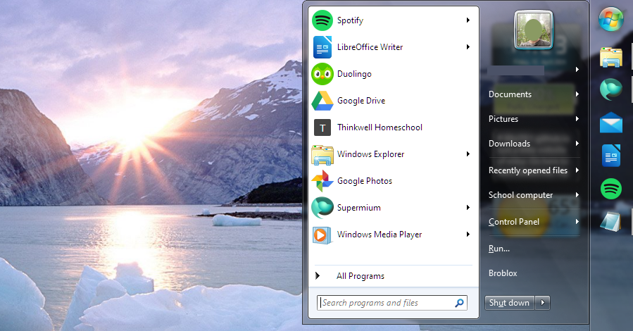
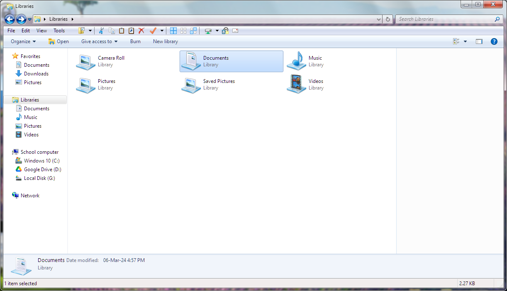
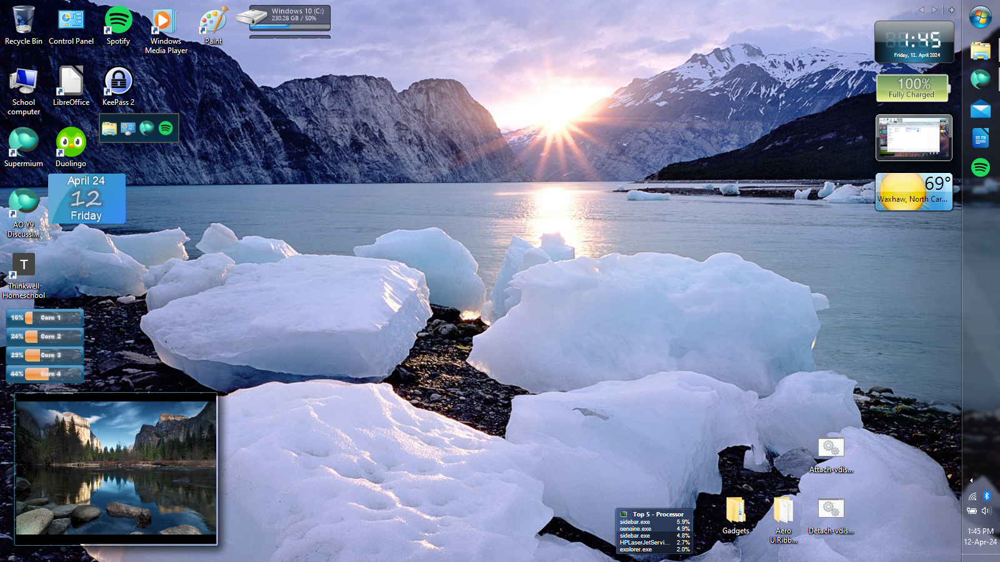

Windows 7 start menu skin (Open-Shell)
There is another Windows 7 start menu clone available for Open-Shell, but it wasn't nearly good enough. So I modified it a bit, and now it's 96% accurate. The skin is compatible with Windows 7 and higher, and Open-Shell 4.4.153 or higher. I've included this skin in my Windows 10-7 transformation pack. Fun fact: The screenshot of Open-Shell Menu on my homepage actually shows this skin. Note: The colors aren't fully accurate in some cases.
{kind=link}
This is what the skin looks like (sorry about the picture being blurry). If you look closely, you'll notice that the font is slightly different from Windows 7. Microsoft updated Segoe UI in Windows 8, so it looks a little different from Windows 7. Also, this is one of the cases where the skin's glass color is off. It has to do with the way Windows and Open-Shell blend colors in the taskbar and start menu. In most cases, however, the taskbar and start menu match up perfectly.
{kind=link}
The menus in the start menu are properly themed to match Windows 7. I did a lot of comparing between this and the real Windows 7 start menu to ensure complete accuracy.
{kind=link}
This isn't specific to this skin, but it's a great feature of Open-Shell. You can arrange the items in the All Programs menu any way you want with Open-Shell for full customization.
{kind=link}
The skin has many options to choose from, such as a glare mask on the user image like Windows 7 has, glass color intensity options, drop shadows on text in the second column, and more.
{kind=link}
This skin features the subtle reflection bars Windows 7 used throughout the Aero UI. You can select several different masks for the perfect look. These reflections show only on the transparent parts of the menu.
You can download the skin here. I also made a version with fewer options for true minimalism. You can find that here. I'm not giving it its own section because it's basically the same, but with only one reflection option and one option for user image glare.
Windows 10-7 transformation
Yes, I actually made one of these. I really like how it turned out. It features Aero Glass, Windows 7 system apps, icons, a full-on visual style, and much, much more. I haven't released it yet since I haven't finished compiling the resources, but expect it Soon™. For now, here's a sneak peek. (bonus points if you already know about the other sneak peek on my about page!)
{kind=link}
The File Explorer is completely transformed. It looks exactly like the Windows 7 one, and even still functions perfectly. The toolbar is from Open-Shell's Classic Explorer plugin, since I find the Windows 7 command bar lacking. Best of both worlds, arguably. The status bar at the bottom is also from Classic Explorer. You can also see the Aero Glass here. Provided by DWMBlurGlass, because WindowBlinds sucks, and Glass8 went under a long time ago and no longer supports the latest Windows 10 builds. (The site linked is an archive of the original website, which no longer exists.)
{kind=link}
{kind=link}
The pack includes 8GadgetPack, a program that restores the gadgets of Windows 7 to Windows 10. It includes a large number of gadgets, including two made by the author: 7 Sidebar, which you can see in this screenshot, and Clipboarder, which is also shown. Both are really powerful. Clipboarder is the better version of Windows 10's Clipboard History feature, and 7 Sidebar allows you to arrange gadgets at the side of the screen, and even always show them except in a fullscreen app. Both gadgets leverage the true power of Windows to greatly enhance the desktop environment. Many of the other gadgets included with 8GadgetPack, however, are trash, and I always delete a large number of them. There are some good ones, though. Bonus points if you can figure out which gadgets in this screenshot are included with Windows 7!
That's all you get for now! Stay tuned for the release!